2022 National 5 Chemistry marking instructions
Source: Scottish Qualifications Authority (SQA) / Qualifications Scotland. This is a StemInteract HTML companion, not an official HTML edition. Selectable text is supplied alongside original page images. Use the images or original PDF for equations, powers, fractions, vector notation, tables and diagrams; text extraction cannot fully preserve mathematical layout.
Jump to a question
PDF page 1
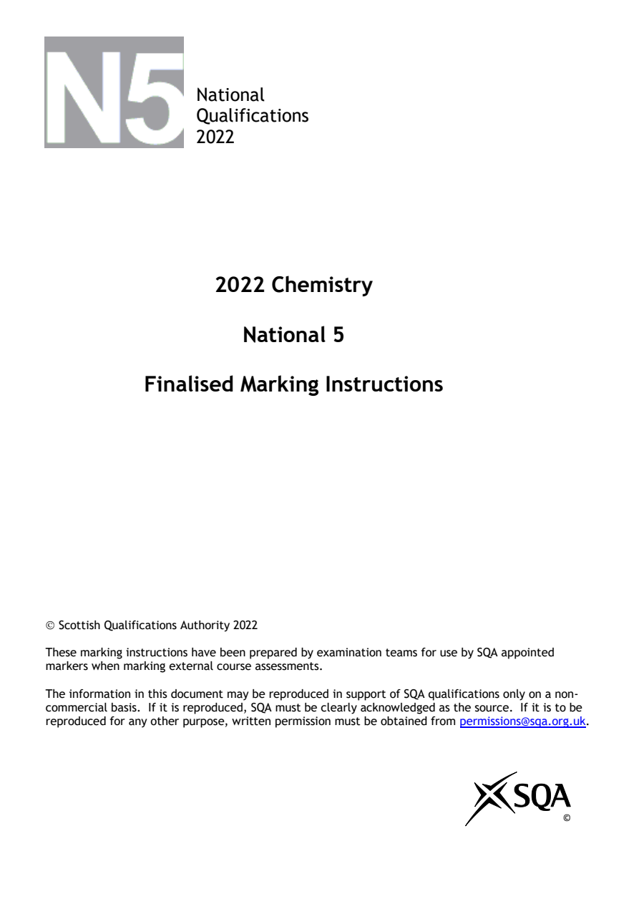
Selectable page text
National
Qualifications
2022
2022 Chemistry
National 5
Finalised Marking Instructions
© Scottish Qualifications Authority 2022
These marking instructions have been prepared by examination teams for use by SQA appointed
markers when marking external course assessments.
The information in this document may be reproduced in support of SQA qualifications only on a non-
commercial basis. If it is reproduced, SQA must be clearly acknowledged as the source. If it is to be
reproduced for any other purpose, written permission must be obtained from permissions@sqa.org.uk.
©PDF page 2
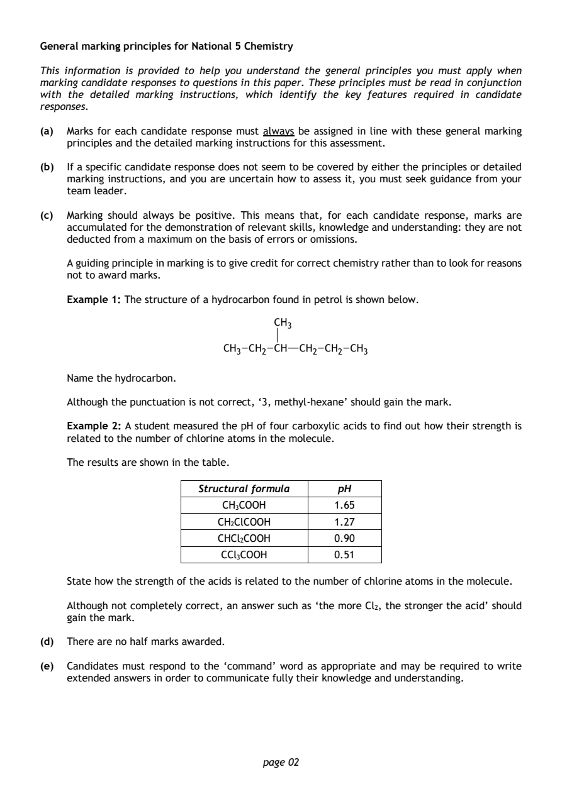
Selectable page text
General marking principles for National 5 Chemistry
This information is provided to help you understand the general principles you must apply when
marking candidate responses to questions in this paper. These principles must be read in conjunction
with the detailed marking instructions, which identify the key features required in candidate
responses.
(a) Marks for each candidate response must always be assigned in line with these general marking
principles and the detailed marking instructions for this assessment.
(b) If a specific candidate response does not seem to be covered by either the principles or detailed
marking instructions, and you are uncertain how to assess it, you must seek guidance from your
team leader.
(c) Marking should always be positive. This means that, for each candidate response, marks are
accumulated for the demonstration of relevant skills, knowledge and understanding: they are not
deducted from a maximum on the basis of errors or omissions.
A guiding principle in marking is to give credit for correct chemistry rather than to look for reasons
not to award marks.
Example 1: The structure of a hydrocarbon found in petrol is shown below.
Name the hydrocarbon.
Although the punctuation is not correct, ‘3, methyl-hexane’ should gain the mark.
Example 2: A student measured the pH of four carboxylic acids to find out how their strength is
related to the number of chlorine atoms in the molecule.
The results are shown in the table.
Structural formula pH
CH₃COOH 1.65
CH₂ClCOOH 1.27
CHCl₂COOH 0.90
CCl₃COOH 0.51
State how the strength of the acids is related to the number of chlorine atoms in the molecule.
Although not completely correct, an answer such as ‘the more Cl₂, the stronger the acid’ should
gain the mark.
(d) There are no half marks awarded.
(e) Candidates must respond to the ‘command’ word as appropriate and may be required to write
extended answers in order to communicate fully their knowledge and understanding.
page 02PDF page 3
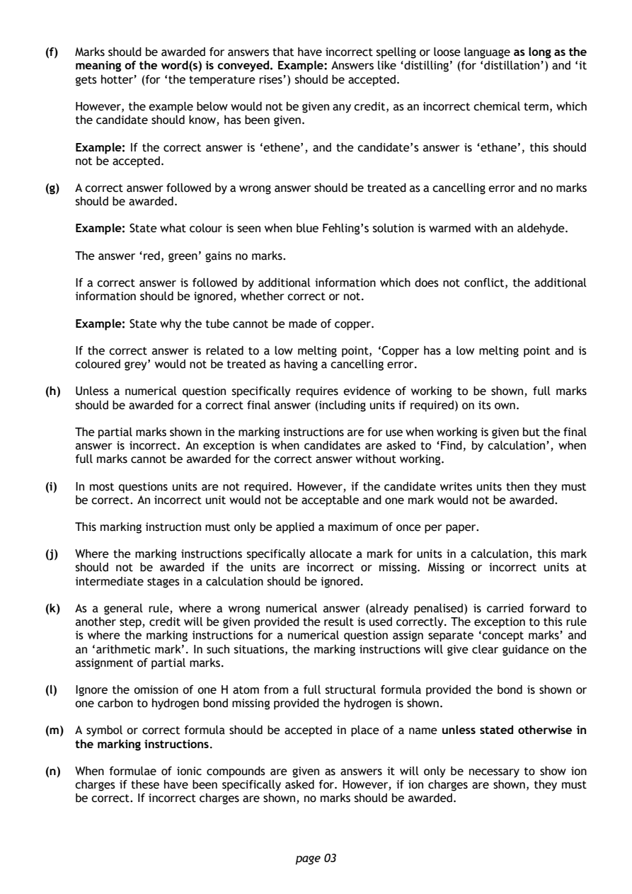
Selectable page text
(f) Marks should be awarded for answers that have incorrect spelling or loose language as long as the
meaning of the word(s) is conveyed. Example: Answers like ‘distilling’ (for ‘distillation’) and ‘it
gets hotter’ (for ‘the temperature rises’) should be accepted.
However, the example below would not be given any credit, as an incorrect chemical term, which
the candidate should know, has been given.
Example: If the correct answer is ‘ethene’, and the candidate’s answer is ‘ethane’, this should
not be accepted.
(g) A correct answer followed by a wrong answer should be treated as a cancelling error and no marks
should be awarded.
Example: State what colour is seen when blue Fehling’s solution is warmed with an aldehyde.
The answer ‘red, green’ gains no marks.
If a correct answer is followed by additional information which does not conflict, the additional
information should be ignored, whether correct or not.
Example: State why the tube cannot be made of copper.
If the correct answer is related to a low melting point, ‘Copper has a low melting point and is
coloured grey’ would not be treated as having a cancelling error.
(h) Unless a numerical question specifically requires evidence of working to be shown, full marks
should be awarded for a correct final answer (including units if required) on its own.
The partial marks shown in the marking instructions are for use when working is given but the final
answer is incorrect. An exception is when candidates are asked to ‘Find, by calculation’, when
full marks cannot be awarded for the correct answer without working.
(i) In most questions units are not required. However, if the candidate writes units then they must
be correct. An incorrect unit would not be acceptable and one mark would not be awarded.
This marking instruction must only be applied a maximum of once per paper.
(j) Where the marking instructions specifically allocate a mark for units in a calculation, this mark
should not be awarded if the units are incorrect or missing. Missing or incorrect units at
intermediate stages in a calculation should be ignored.
(k) As a general rule, where a wrong numerical answer (already penalised) is carried forward to
another step, credit will be given provided the result is used correctly. The exception to this rule
is where the marking instructions for a numerical question assign separate ‘concept marks’ and
an ‘arithmetic mark’. In such situations, the marking instructions will give clear guidance on the
assignment of partial marks.
(l) Ignore the omission of one H atom from a full structural formula provided the bond is shown or
one carbon to hydrogen bond missing provided the hydrogen is shown.
(m) A symbol or correct formula should be accepted in place of a name unless stated otherwise in
the marking instructions.
(n) When formulae of ionic compounds are given as answers it will only be necessary to show ion
charges if these have been specifically asked for. However, if ion charges are shown, they must
be correct. If incorrect charges are shown, no marks should be awarded.
page 03PDF page 4
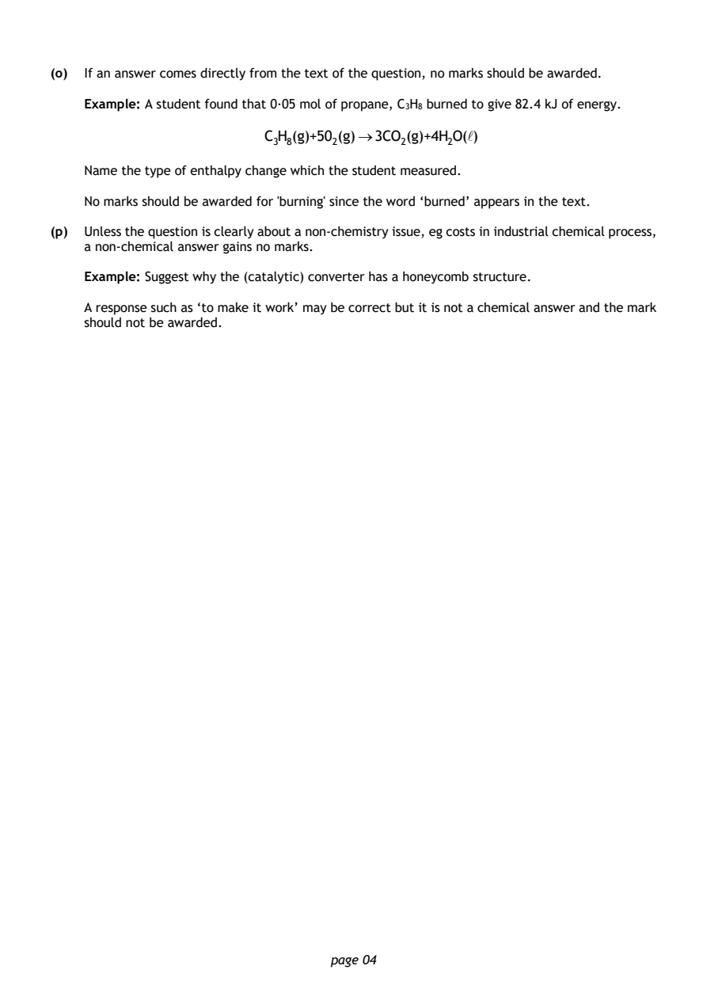
Selectable page text
(o) If an answer comes directly from the text of the question, no marks should be awarded.
Example: A student found that 0·05 mol of propane, C₃H₈ burned to give 82.4 kJ of energy.
C₃H₈(g)+50₂(g)→3CO₂(g)+4H₂O( )
Name the type of enthalpy change which the student measured.
No marks should be awarded for 'burning' since the word ‘burned’ appears in the text.
(p) Unless the question is clearly about a non-chemistry issue, eg costs in industrial chemical process,
a non-chemical answer gains no marks.
Example: Suggest why the (catalytic) converter has a honeycomb structure.
A response such as ‘to make it work’ may be correct but it is not a chemical answer and the mark
should not be awarded.
page 04PDF page 5
Paper 1, Question 1Paper 1, Question 2Paper 1, Question 3Paper 1, Question 4Paper 1, Question 5Paper 1, Question 6Paper 1, Question 7Paper 1, Question 8Paper 1, Question 9Paper 1, Question 10Paper 1, Question 11Paper 1, Question 12Paper 1, Question 13Paper 1, Question 14Paper 1, Question 15Paper 1, Question 16Paper 1, Question 17Paper 1, Question 18Paper 1, Question 19Paper 1, Question 20Paper 1, Question 21Paper 1, Question 22Paper 1, Question 23Paper 1, Question 24Paper 1, Question 25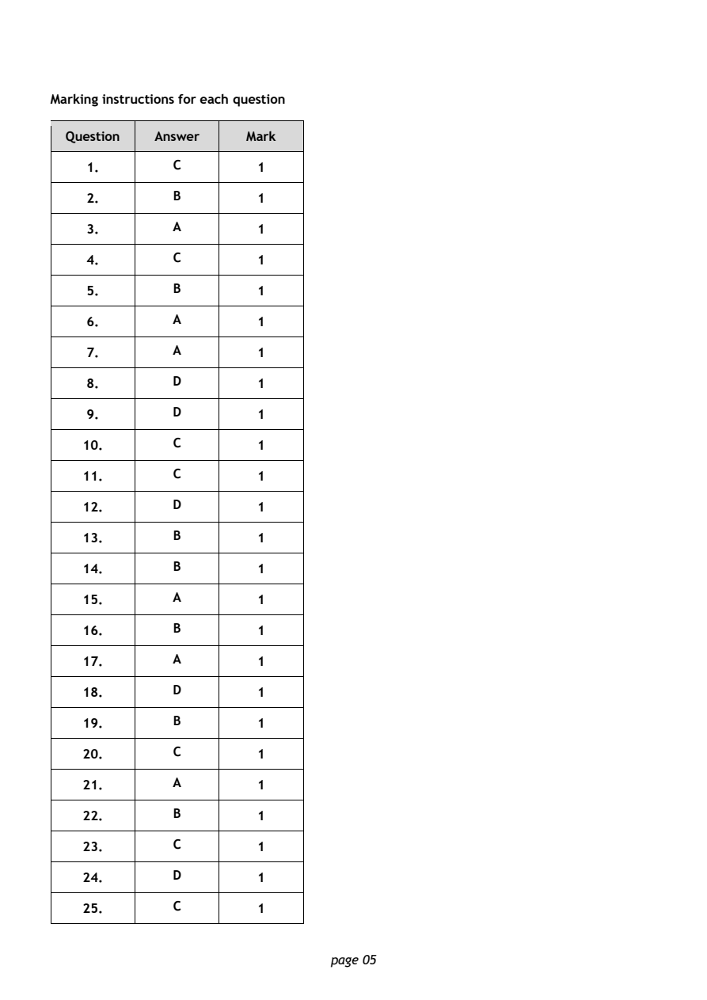
Selectable page text
Marking instructions for each question
Question Answer Mark
1. C 1
2. B 1
3. A 1
4. C 1
5. B 1
6. A 1
7. A 1
8. D 1
9. D 1
10. C 1
11. C 1
12. D 1
13. B 1
14. B 1
15. A 1
16. B 1
17. A 1
18. D 1
19. B 1
20. C 1
21. A 1
22. B 1
23. C 1
24. D 1
25. C 1
page 05PDF page 6
Paper 2, Question 1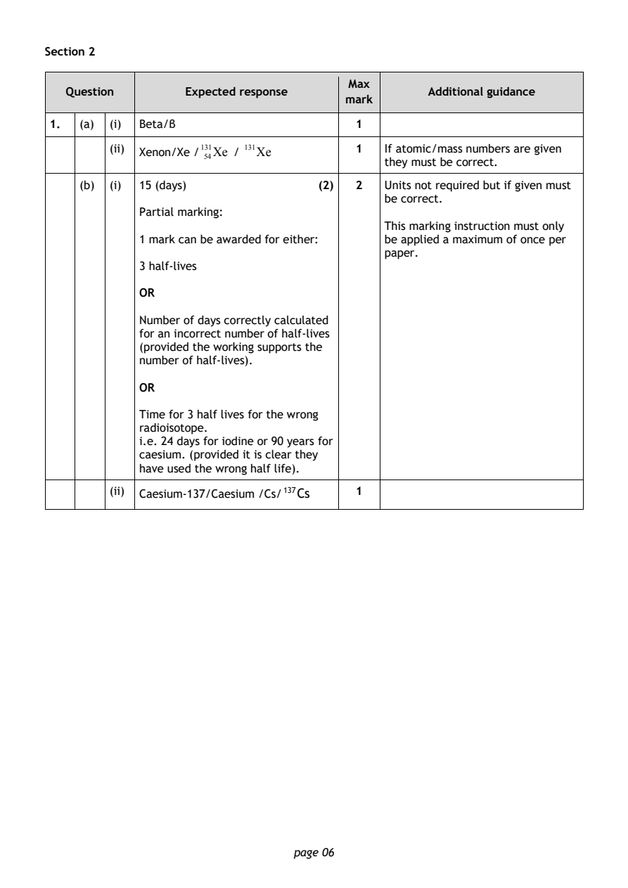
Selectable page text
Section 2
Max
Question Expected response Additional guidance
mark
1. (a) (i) Beta/β 1
(ii) Xenon/Xe /¹₅³₄¹Xe / ¹³1Xe 1 If atomic/mass numbers are given
they must be correct.
(b) (i) 15 (days) (2) 2 Units not required but if given must
be correct.
Partial marking:
This marking instruction must only
1 mark can be awarded for either: be applied a maximum of once per
paper.
3 half-lives
OR
Number of days correctly calculated
for an incorrect number of half-lives
(provided the working supports the
number of half-lives).
OR
Time for 3 half lives for the wrong
radioisotope.
i.e. 24 days for iodine or 90 years for
caesium. (provided it is clear they
have used the wrong half life).
(ii) Caesium-137/Caesium /Cs/¹³⁷Cs 1
page 06PDF page 7
Paper 2, Question 2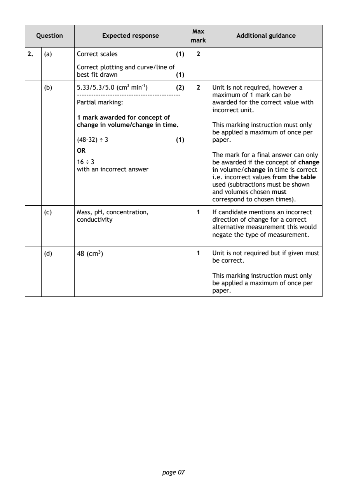
Selectable page text
Max
Question Expected response Additional guidance
mark
2. (a) Correct scales (1) 2
Correct plotting and curve/line of
best fit drawn (1)
(b) 5.33/5.3/5.0 (cm³ min⁻¹) (2) 2 Unit is not required, however a
-------------------------------------------- maximum of 1 mark can be
Partial marking: awarded for the correct value with
incorrect unit.
1 mark awarded for concept of
change in volume/change in time. This marking instruction must only
be applied a maximum of once per
(48-32) ÷ 3 (1) paper.
OR
The mark for a final answer can only
16 ÷ 3 be awarded if the concept of change
with an incorrect answer in volume/change in time is correct
i.e. incorrect values from the table
used (subtractions must be shown
and volumes chosen must
correspond to chosen times).
(c) Mass, pH, concentration, 1 If candidate mentions an incorrect
conductivity direction of change for a correct
alternative measurement this would
negate the type of measurement.
(d) 48 (cm³) 1 Unit is not required but if given must
be correct.
This marking instruction must only
be applied a maximum of once per
paper.
page 07PDF page 8
Paper 2, Question 3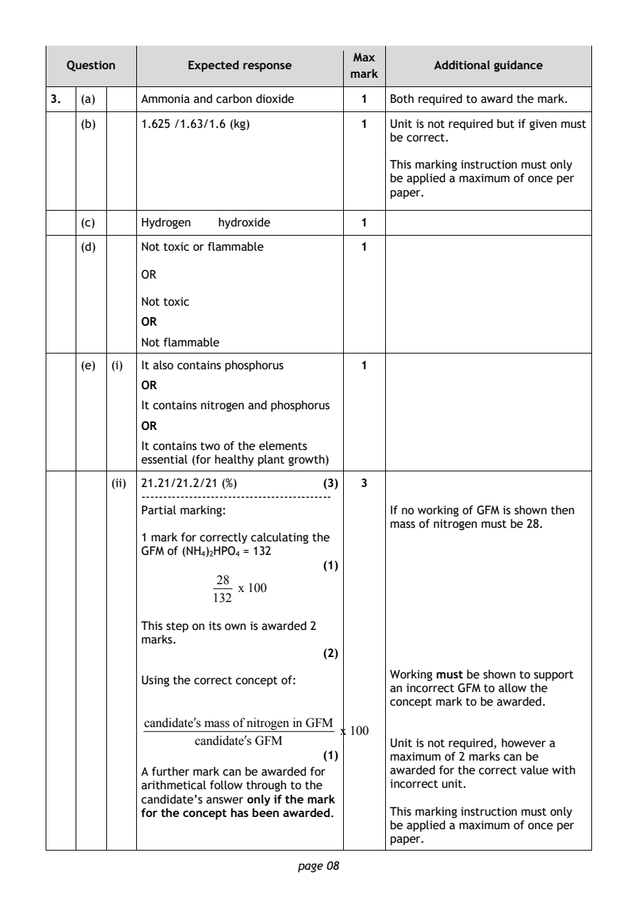
Selectable page text
Max
Question Expected response Additional guidance
mark
3. (a) Ammonia and carbon dioxide 1 Both required to award the mark.
(b) 1.625 /1.63/1.6 (kg) 1 Unit is not required but if given must
be correct.
This marking instruction must only
be applied a maximum of once per
paper.
(c) Hydrogen hydroxide 1
(d) Not toxic or flammable 1
OR
Not toxic
OR
Not flammable
(e) (i) It also contains phosphorus 1
OR
It contains nitrogen and phosphorus
OR
It contains two of the elements
essential (for healthy plant growth)
(ii) 21.21/21.2/21 (%) (3) 3
--------------------------------------------
Partial marking: If no working of GFM is shown then
mass of nitrogen must be 28.
1 mark for correctly calculating the
GFM of (NH₄) HPO₄ = 132
2
(1)
28
x 100
132
This step on its own is awarded 2
marks.
(2)
Working must be shown to support
Using the correct concept of:
an incorrect GFM to allow the
concept mark to be awarded.
candidate′s mass of nitrogen in GFM
x 100
candidate′s GFM Unit is not required, however a
(1) maximum of 2 marks can be
A further mark can be awarded for awarded for the correct value with
arithmetical follow through to the incorrect unit.
candidate’s answer only if the mark
for the concept has been awarded. This marking instruction must only
be applied a maximum of once per
paper.
page 08PDF page 9
Paper 2, Question 4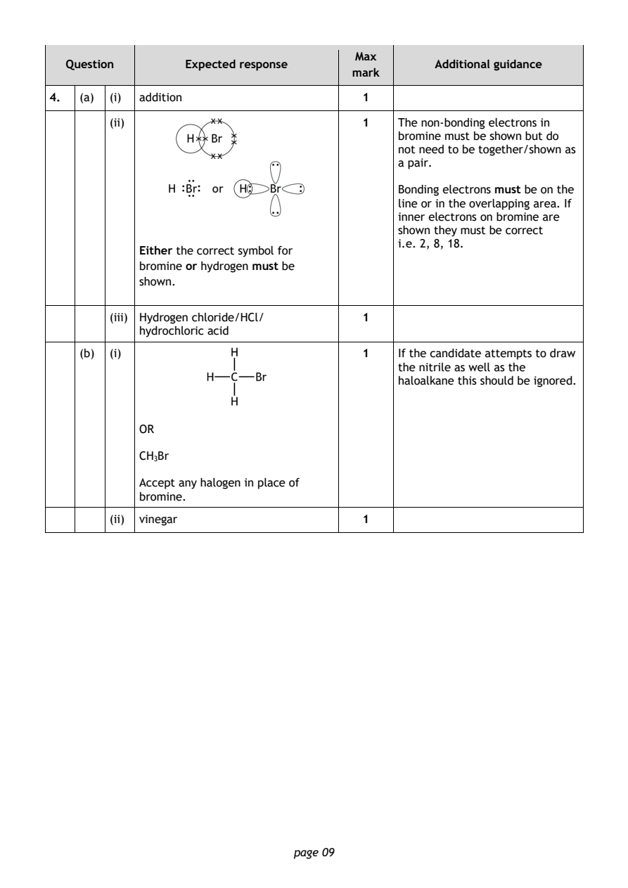
Selectable page text
Max
Question Expected response Additional guidance
mark
4. (a) (i) addition 1
(ii) 1 The non-bonding electrons in
bromine must be shown but do
not need to be together/shown as
a pair.
Bonding electrons must be on the
line or in the overlapping area. If
inner electrons on bromine are
shown they must be correct
i.e. 2, 8, 18.
Either the correct symbol for
bromine or hydrogen must be
shown.
(iii) Hydrogen chloride/HCl/ 1
hydrochloric acid
(b) (i) 1 If the candidate attempts to draw
the nitrile as well as the
haloalkane this should be ignored.
OR
CH₃Br
Accept any halogen in place of
bromine.
(ii) vinegar 1
page 09PDF page 10
Paper 2, Question 5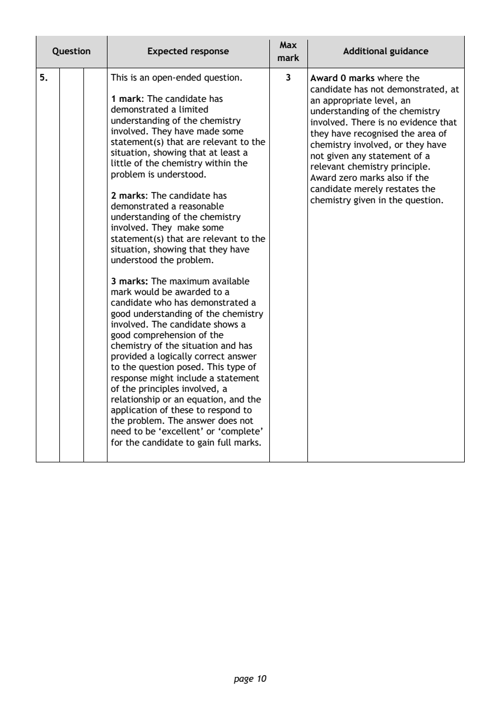
Selectable page text
Max
Question Expected response Additional guidance
mark
5. This is an open-ended question. 3 Award 0 marks where the
candidate has not demonstrated, at
1 mark: The candidate has an appropriate level, an
demonstrated a limited understanding of the chemistry
understanding of the chemistry involved. There is no evidence that
involved. They have made some
they have recognised the area of
statement(s) that are relevant to the
chemistry involved, or they have
situation, showing that at least a
not given any statement of a
little of the chemistry within the
relevant chemistry principle.
problem is understood.
Award zero marks also if the
candidate merely restates the
2 marks: The candidate has
chemistry given in the question.
demonstrated a reasonable
understanding of the chemistry
involved. They make some
statement(s) that are relevant to the
situation, showing that they have
understood the problem.
3 marks: The maximum available
mark would be awarded to a
candidate who has demonstrated a
good understanding of the chemistry
involved. The candidate shows a
good comprehension of the
chemistry of the situation and has
provided a logically correct answer
to the question posed. This type of
response might include a statement
of the principles involved, a
relationship or an equation, and the
application of these to respond to
the problem. The answer does not
need to be ‘excellent’ or ‘complete’
for the candidate to gain full marks.
page 10PDF page 11
Paper 2, Question 6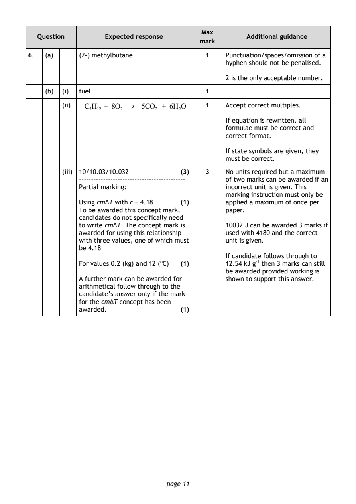
Selectable page text
Max
Question Expected response Additional guidance
mark
6. (a) (2-) methylbutane 1 Punctuation/spaces/omission of a
hyphen should not be penalised.
2 is the only acceptable number.
(b) (i) fuel 1
(ii) C₅H₁₂ + 8O₂ → 5CO₂ + 6H₂O 1 Accept correct multiples.
If equation is rewritten, all
formulae must be correct and
correct format.
If state symbols are given, they
must be correct.
(iii) 10/10.03/10.032 (3) 3 No units required but a maximum
-------------------------------------------- of two marks can be awarded if an
Partial marking: incorrect unit is given. This
marking instruction must only be
Using cmΔT with c = 4.18 (1) applied a maximum of once per
To be awarded this concept mark, paper.
candidates do not specifically need
to write cmΔT. The concept mark is 10032 J can be awarded 3 marks if
awarded for using this relationship used with 4180 and the correct
with three values, one of which must unit is given.
be 4.18
If candidate follows through to
For values 0.2 (kg) and 12 (ºC) (1) 12.54 kJ g⁻¹ then 3 marks can still
be awarded provided working is
A further mark can be awarded for shown to support this answer.
arithmetical follow through to the
candidate’s answer only if the mark
for the cmΔT concept has been
awarded. (1)
page 11PDF page 12
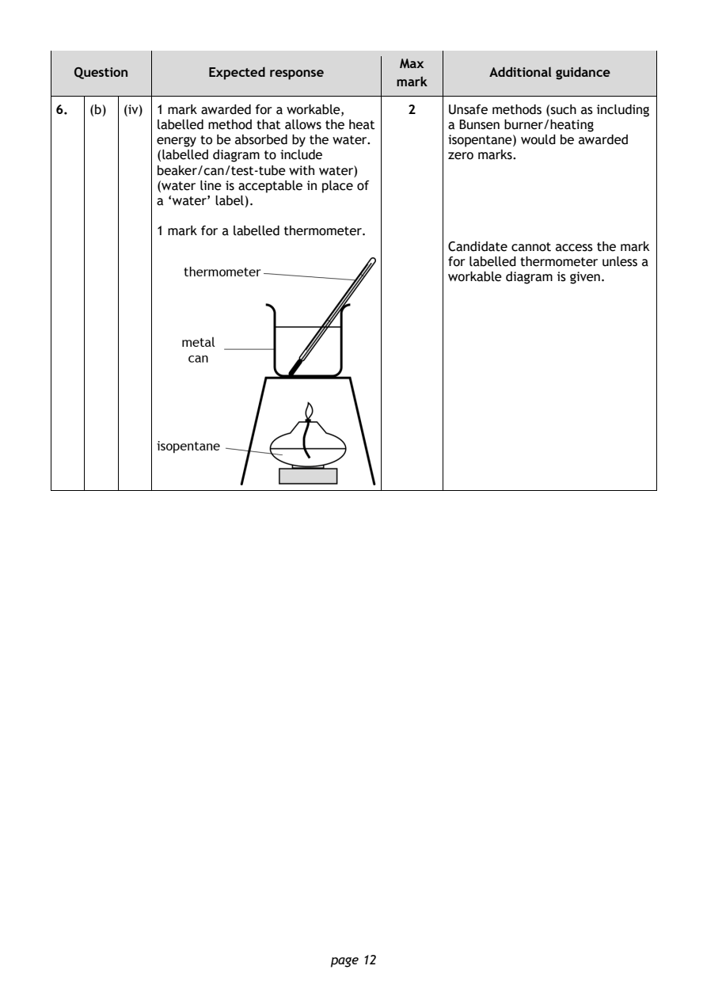
Selectable page text
Max
Question Expected response Additional guidance
mark
6. (b) (iv) 1 mark awarded for a workable, 2 Unsafe methods (such as including
labelled method that allows the heat a Bunsen burner/heating
energy to be absorbed by the water. isopentane) would be awarded
(labelled diagram to include zero marks.
beaker/can/test-tube with water)
(water line is acceptable in place of
a ‘water’ label).
1 mark for a labelled thermometer.
Candidate cannot access the mark
for labelled thermometer unless a
workable diagram is given.
page 12PDF page 13
Paper 2, Question 7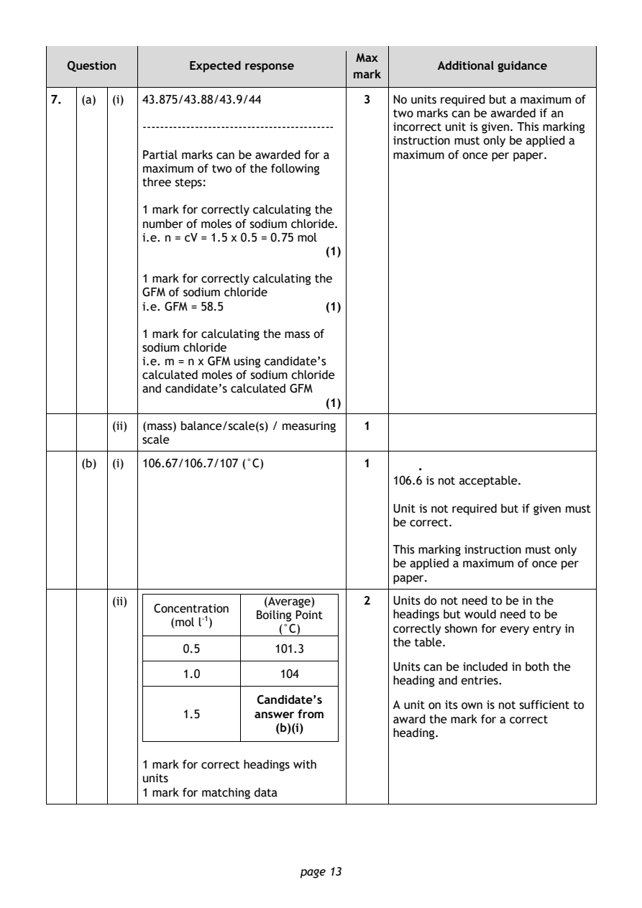
Selectable page text
Max
Question Expected response Additional guidance
mark
7. (a) (i) 43.875/43.88/43.9/44 3 No units required but a maximum of
two marks can be awarded if an
-------------------------------------------- incorrect unit is given. This marking
instruction must only be applied a
Partial marks can be awarded for a maximum of once per paper.
maximum of two of the following
three steps:
1 mark for correctly calculating the
number of moles of sodium chloride.
i.e. n = cV = 1.5 x 0.5 = 0.75 mol
(1)
1 mark for correctly calculating the
GFM of sodium chloride
i.e. GFM = 58.5 (1)
1 mark for calculating the mass of
sodium chloride
i.e. m = n x GFM using candidate’s
calculated moles of sodium chloride
and candidate’s calculated GFM
(1)
(ii) (mass) balance/scale(s) / measuring 1
scale
(b) (i) 106.67/106.7/107 (°C) 1 .
106.6 is not acceptable.
Unit is not required but if given must
be correct.
This marking instruction must only
be applied a maximum of once per
paper.
(ii) (Average) 2 Units do not need to be in the
Concentration
Boiling Point headings but would need to be
(mol l⁻¹)
(°C) correctly shown for every entry in
the table.
0.5 101.3
Units can be included in both the
1.0 104
heading and entries.
Candidate’s
A unit on its own is not sufficient to
1.5 answer from
award the mark for a correct
(b)(i)
heading.
1 mark for correct headings with
units
1 mark for matching data
page 13PDF page 14
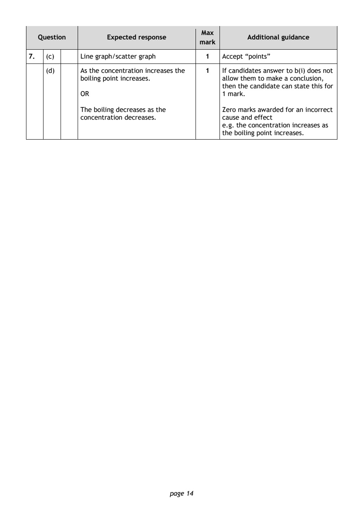
Selectable page text
Max
Question Expected response Additional guidance
mark
7. (c) Line graph/scatter graph 1 Accept “points”
(d) As the concentration increases the 1 If candidates answer to b(i) does not
boiling point increases. allow them to make a conclusion,
then the candidate can state this for
OR 1 mark.
The boiling decreases as the Zero marks awarded for an incorrect
concentration decreases. cause and effect
e.g. the concentration increases as
the boiling point increases.
page 14PDF page 15
Paper 2, Question 8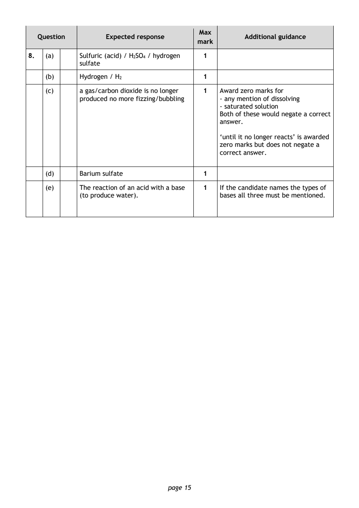
Selectable page text
Max
Question Expected response Additional guidance
mark
8. (a) Sulfuric (acid) / H₂SO₄ / hydrogen 1
sulfate
(b) Hydrogen / H₂ 1
(c) a gas/carbon dioxide is no longer 1 Award zero marks for
produced no more fizzing/bubbling - any mention of dissolving
- saturated solution
Both of these would negate a correct
answer.
‘until it no longer reacts’ is awarded
zero marks but does not negate a
correct answer.
(d) Barium sulfate 1
(e) The reaction of an acid with a base 1 If the candidate names the types of
(to produce water). bases all three must be mentioned.
page 15PDF page 16
Paper 2, Question 9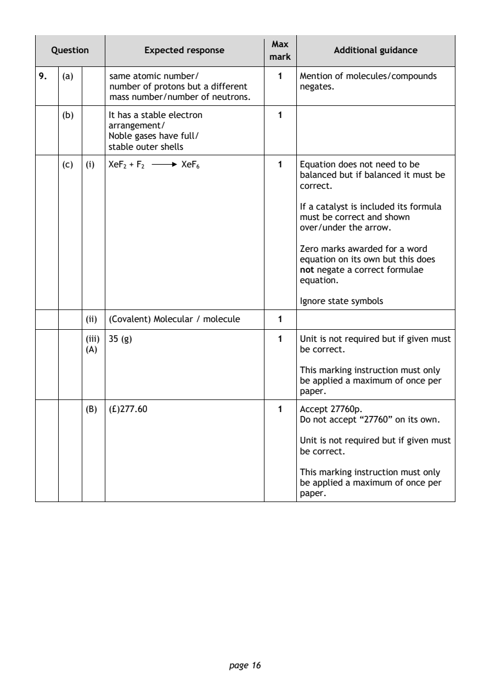
Selectable page text
Max
Question Expected response Additional guidance
mark
9. (a) same atomic number/ 1 Mention of molecules/compounds
number of protons but a different negates.
mass number/number of neutrons.
(b) It has a stable electron 1
arrangement/
Noble gases have full/
stable outer shells
(c) (i) XeF₂ + F₂ XeF₆ 1 Equation does not need to be
balanced but if balanced it must be
correct.
If a catalyst is included its formula
must be correct and shown
over/under the arrow.
Zero marks awarded for a word
equation on its own but this does
not negate a correct formulae
equation.
Ignore state symbols
(ii) (Covalent) Molecular / molecule 1
(iii) 35 (g) 1 Unit is not required but if given must
(A) be correct.
This marking instruction must only
be applied a maximum of once per
paper.
(B) (£)277.60 1 Accept 27760p.
Do not accept “27760” on its own.
Unit is not required but if given must
be correct.
This marking instruction must only
be applied a maximum of once per
paper.
page 16PDF page 17
Paper 2, Question 10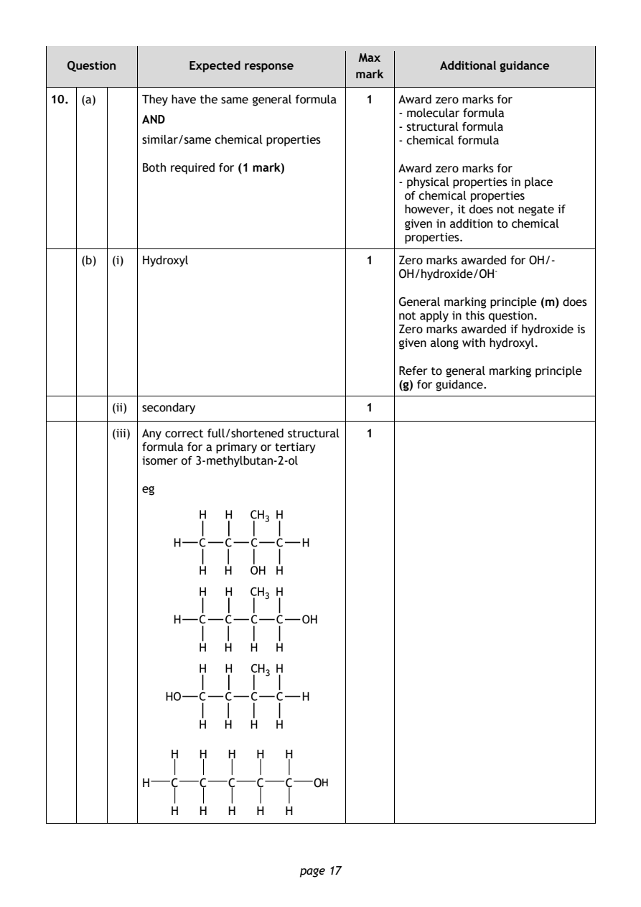
Selectable page text
Max
Question Expected response Additional guidance
mark
10. (a) They have the same general formula 1 Award zero marks for
- molecular formula
AND
- structural formula
similar/same chemical properties - chemical formula
Both required for (1 mark) Award zero marks for
- physical properties in place
of chemical properties
however, it does not negate if
given in addition to chemical
properties.
(b) (i) Hydroxyl 1 Zero marks awarded for OH/-
OH/hydroxide/OH⁻
General marking principle (m) does
not apply in this question.
Zero marks awarded if hydroxide is
given along with hydroxyl.
Refer to general marking principle
(g) for guidance.
(ii) secondary 1
(iii) Any correct full/shortened structural 1
formula for a primary or tertiary
isomer of 3-methylbutan-2-ol
eg
H H H H H
H C C C C C OH
H H H H H
page 17PDF page 18
Paper 2, Question 11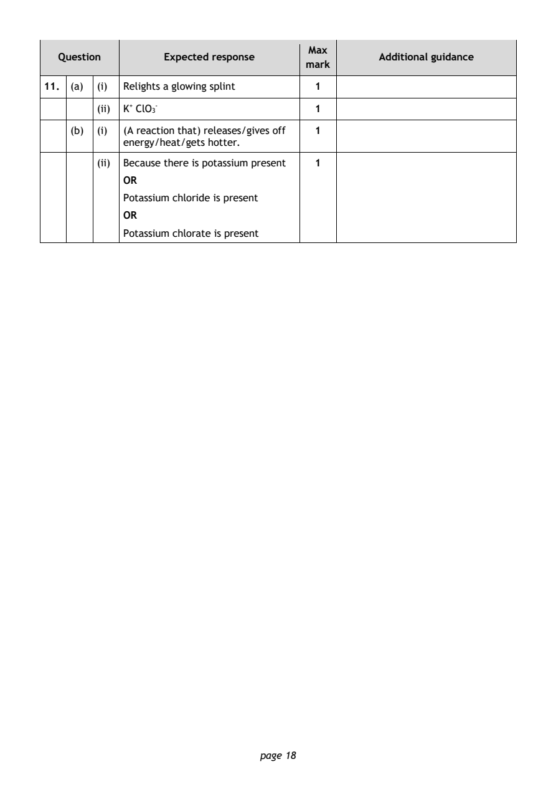
Selectable page text
Max
Question Expected response Additional guidance
mark
11. (a) (i) Relights a glowing splint 1
(ii) K⁺ ClO₃⁻ 1
(b) (i) (A reaction that) releases/gives off 1
energy/heat/gets hotter.
(ii) Because there is potassium present 1
OR
Potassium chloride is present
OR
Potassium chlorate is present
page 18PDF page 19
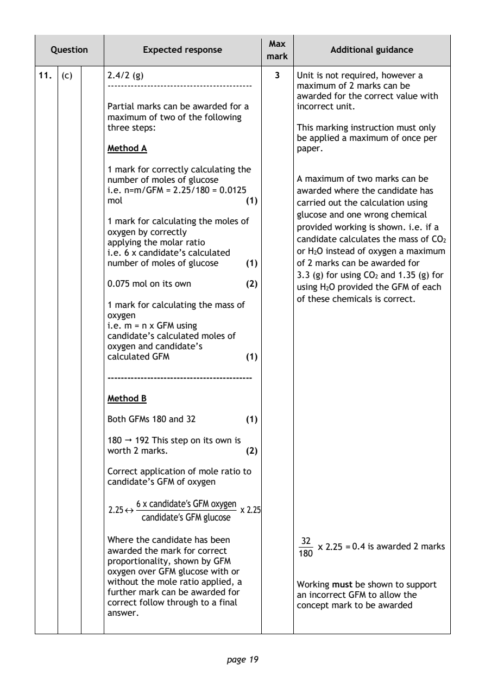
Selectable page text
Max
Question Expected response Additional guidance
mark
11. (c) 2.4/2 (g) 3 Unit is not required, however a
-------------------------------------------- maximum of 2 marks can be
awarded for the correct value with
Partial marks can be awarded for a incorrect unit.
maximum of two of the following
three steps: This marking instruction must only
be applied a maximum of once per
Method A paper.
1 mark for correctly calculating the
number of moles of glucose A maximum of two marks can be
i.e. n=m/GFM = 2.25/180 = 0.0125 awarded where the candidate has
mol (1) carried out the calculation using
glucose and one wrong chemical
1 mark for calculating the moles of
provided working is shown. i.e. if a
oxygen by correctly
candidate calculates the mass of CO₂
applying the molar ratio
i.e. 6 x candidate’s calculated or H₂O instead of oxygen a maximum
number of moles of glucose (1) of 2 marks can be awarded for
3.3 (g) for using CO₂ and 1.35 (g) for
0.075 mol on its own (2)
using H₂O provided the GFM of each
of these chemicals is correct.
1 mark for calculating the mass of
oxygen
i.e. m = n x GFM using
candidate’s calculated moles of
oxygen and candidate’s
calculated GFM (1)
--------------------------------------------
Method B
Both GFMs 180 and 32 (1)
180 192 This step on its own is
worth 2 marks. (2)
Correct application of mole ratio to
candidate’s GFM of oxygen
6 x candidate′s GFM oxygen
2.25↔ x 2.25
candidate′s GFM glucose
Where the candidate has been 32
x 2.25 = 0.4 is awarded 2 marks
awarded the mark for correct
180
proportionality, shown by GFM
oxygen over GFM glucose with or
without the mole ratio applied, a
Working must be shown to support
further mark can be awarded for an incorrect GFM to allow the
correct follow through to a final concept mark to be awarded
answer.
page 19PDF page 20
Paper 2, Question 12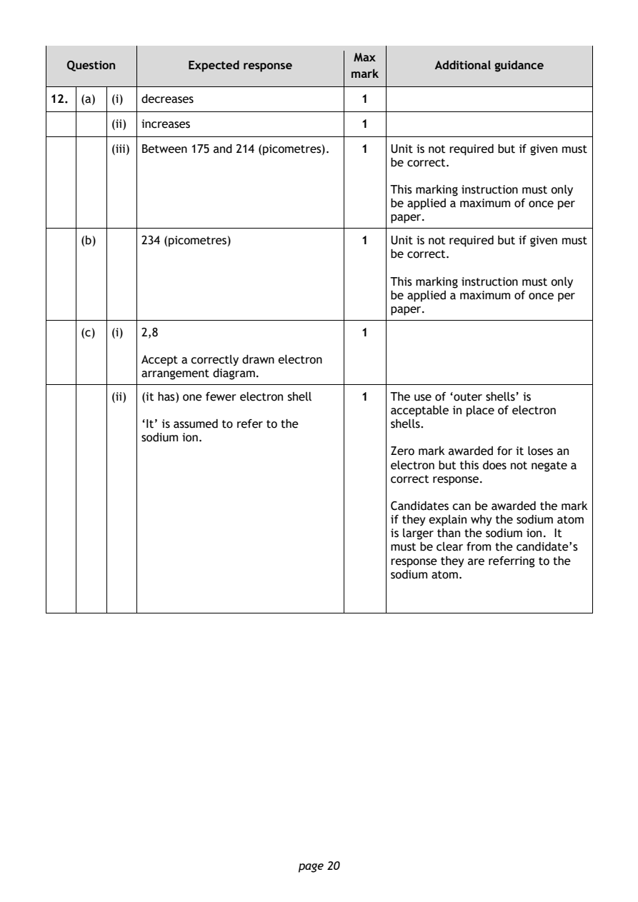
Selectable page text
Max
Question Expected response Additional guidance
mark
12. (a) (i) decreases 1
(ii) increases 1
(iii) Between 175 and 214 (picometres). 1 Unit is not required but if given must
be correct.
This marking instruction must only
be applied a maximum of once per
paper.
(b) 234 (picometres) 1 Unit is not required but if given must
be correct.
This marking instruction must only
be applied a maximum of once per
paper.
(c) (i) 2,8 1
Accept a correctly drawn electron
arrangement diagram.
(ii) (it has) one fewer electron shell 1 The use of ‘outer shells’ is
acceptable in place of electron
‘It’ is assumed to refer to the shells.
sodium ion.
Zero mark awarded for it loses an
electron but this does not negate a
correct response.
Candidates can be awarded the mark
if they explain why the sodium atom
is larger than the sodium ion. It
must be clear from the candidate’s
response they are referring to the
sodium atom.
page 20PDF page 21
Paper 2, Question 13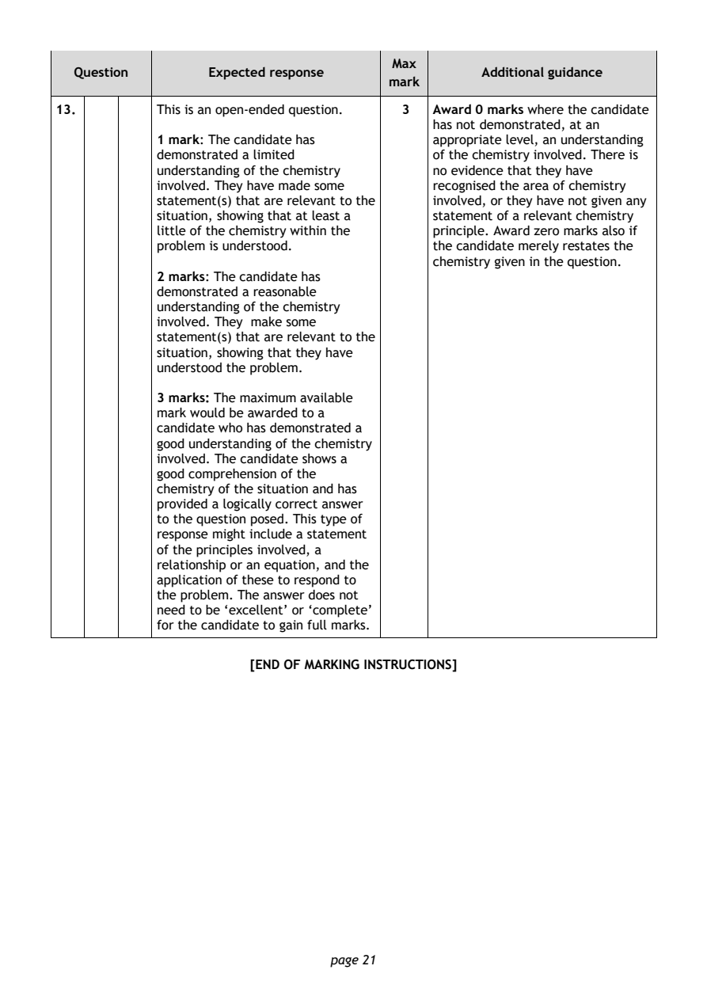
Selectable page text
Max
Question Expected response Additional guidance
mark
13. This is an open-ended question. 3 Award 0 marks where the candidate
has not demonstrated, at an
1 mark: The candidate has appropriate level, an understanding
demonstrated a limited of the chemistry involved. There is
understanding of the chemistry no evidence that they have
involved. They have made some recognised the area of chemistry
statement(s) that are relevant to the involved, or they have not given any
situation, showing that at least a statement of a relevant chemistry
little of the chemistry within the principle. Award zero marks also if
problem is understood. the candidate merely restates the
chemistry given in the question.
2 marks: The candidate has
demonstrated a reasonable
understanding of the chemistry
involved. They make some
statement(s) that are relevant to the
situation, showing that they have
understood the problem.
3 marks: The maximum available
mark would be awarded to a
candidate who has demonstrated a
good understanding of the chemistry
involved. The candidate shows a
good comprehension of the
chemistry of the situation and has
provided a logically correct answer
to the question posed. This type of
response might include a statement
of the principles involved, a
relationship or an equation, and the
application of these to respond to
the problem. The answer does not
need to be ‘excellent’ or ‘complete’
for the candidate to gain full marks.
[END OF MARKING INSTRUCTIONS]
page 21